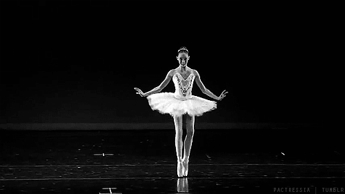

What does it take to become a ballerina?
Physical Characteristics:
- Body type and proportion - Proportions in the 9-head range, toned muscle building, and more importantly: long lean muscle building. You need to be naturally thin, and naturally elongated
- Right kind of facility - hips that are open, feet that point, knees that stretch, backs that are hypermobile.
- Physical endurence - dance is a very physical craft. If you want to become a ballerina, you'll have to be in peek physical shape
Psichological strengts
- Smart, hardworking and dedicated - Loving ballet isn’t enough.You have to be hardworking, and put 100% into every class, and no matter how hard you work, you can never give up.
- Musical and an artist - You have to be able to hear the music, feel the ballet, and develop a character. You also have to be able to perform.
- enacity is key. Focus is crucial. Attention to details, the ability to blend into the corps de ballet when needed, and stand out as soloist when asked.

Other factors:
- You need to have the right financial circumstances - Ballet is expensive.
- You need to have the RIGHT training - you have to find a school that is capable of placing you into a company.